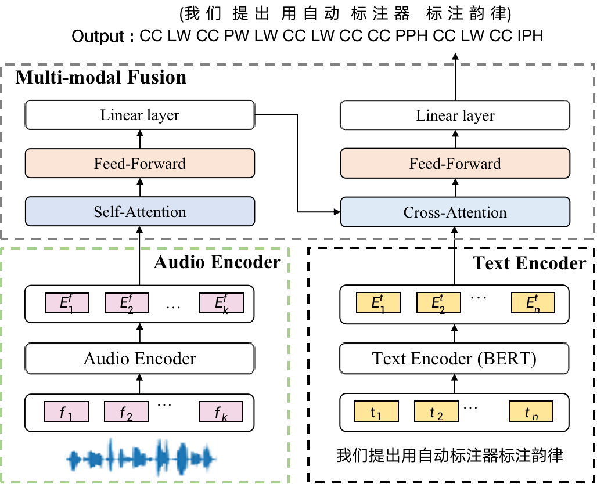

Abstract: Prosodic boundary plays an important role in text-to-speech synthesis (TTS) in terms of naturalness and readability. However, the acquisition of prosodic boundary labels relies on manual annotation, which is costly and time-consuming. In this paper, we propose to automatically extract prosodic boundary labels from text-audio data via a neural text-speech model with pre-trained audio encoders. This model is pre-trained on text and speech data separately and jointly fine-tuned on TTS data in a triplet format: \{speech, text, prosody\}. The experimental results on both automatic evaluation and human evaluation demonstrate that: 1) the proposed text-speech prosody annotation framework significantly outperforms text-only baselines; 2) the quality of automatic prosodic boundary annotations is comparable to human annotations; 3) TTS systems trained with model-annotated boundaries are slightly better than systems that use manual ones.
Architecture of the proposed text-speech automatic prosody annotation model:
The proposed framework consists of three main components: a text encoder, an audio encoder, and a multi-modal fusion decoder.
<\p>
